Neste post, vamos explorar a integração nativa do n8n com o protocolo Model Context Protocol (MCP) e como isso pode revolucionar o desenvolvimento frontend e design AI. Vamos entender o que são MCPs e como configurá-los para potencializar suas ferramentas e assistentes de IA.
Índice
- 🌟 Introdução ao MCP
- 🔍 Definição do Protocolo de Contexto do Modelo
- 🌀 Uma Analogia para Entender MCPs
- 💻 Exemplo Prático com Firecrawl
- 🚀 Benefícios dos MCPs para Agentes de IA
- 🔧 Atualizando o n8n para Acesso aos Nós MCP
- ⚙️ Configurando o MCP Server Trigger
- 📅 Criando uma Ferramenta de Google Calendar
- 📱 Adicionando a Ferramenta do Telegram
- 🔍 Testando o MCP Server Trigger
- 🤖 Interagindo com o Agente de IA
- 🔒 Questões de Segurança com Nós Customizados
- 🛠️ Vantagens de Usar o MCP
- 🔧 Ativando o Modo Desenvolvedor no Cloud Desktop
- 🔗 Concluindo a Integração com Claude Desktop
- ❓ FAQ sobre MCP e Desenvolvimento Frontend
🌟 Introdução ao MCP
O Protocolo de Contexto do Modelo (MCP) é uma inovação que transforma a forma como os agentes de IA interagem com ferramentas e dados. Em um mundo onde a integração é fundamental, o MCP surge como uma solução prática e eficiente. Ele padroniza a comunicação entre diferentes aplicações, permitindo que agentes de IA acessem informações de forma rápida e precisa.
Imagine um assistente virtual que, ao invés de precisar de configurações manuais para cada ferramenta, pode acessar um repositório centralizado de informações e serviços. Isso não só economiza tempo, mas também minimiza erros e inconsistências. O MCP é o que torna isso possível.
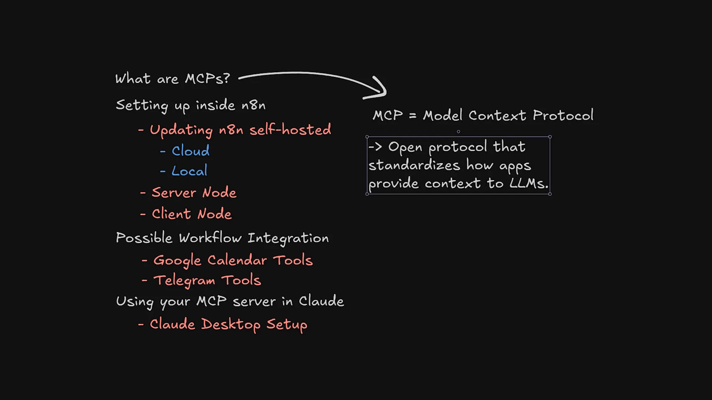
O Que É o MCP?
O MCP é um protocolo aberto que define como as aplicações devem fornecer contexto a agentes de IA. Ele possibilita que diferentes ferramentas se comuniquem entre si de maneira harmoniosa, facilitando a troca de informações e a execução de tarefas complexas.
Com o MCP, você pode integrar diversas ferramentas em um único fluxo de trabalho, permitindo que seu assistente virtual opere de maneira mais eficiente. Essa abordagem não apenas melhora a produtividade, mas também oferece uma experiência de usuário mais fluida e intuitiva.
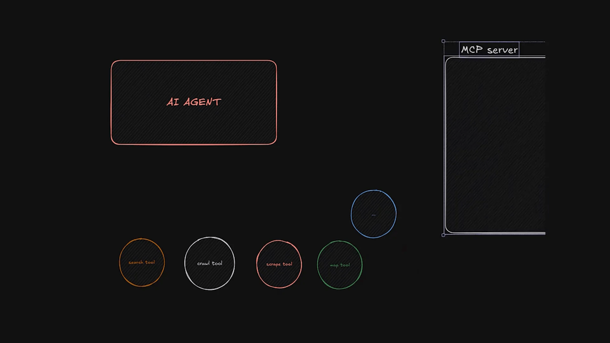
🔍 Definição do Protocolo de Contexto do Modelo
O Protocolo de Contexto do Modelo é uma especificação técnica que orienta como os dados devem ser estruturados e transmitidos entre agentes de IA e suas ferramentas associadas. O objetivo principal é garantir que todos os componentes de um sistema possam se comunicar de forma eficaz, independentemente de suas especificações internas.
Um dos aspectos mais importantes do MCP é sua capacidade de atualizar informações em tempo real. Isso significa que, se uma ferramenta altera a forma como ela espera receber dados, essa mudança é refletida instantaneamente no fluxo de trabalho, evitando assim a necessidade de reconfigurações manuais.
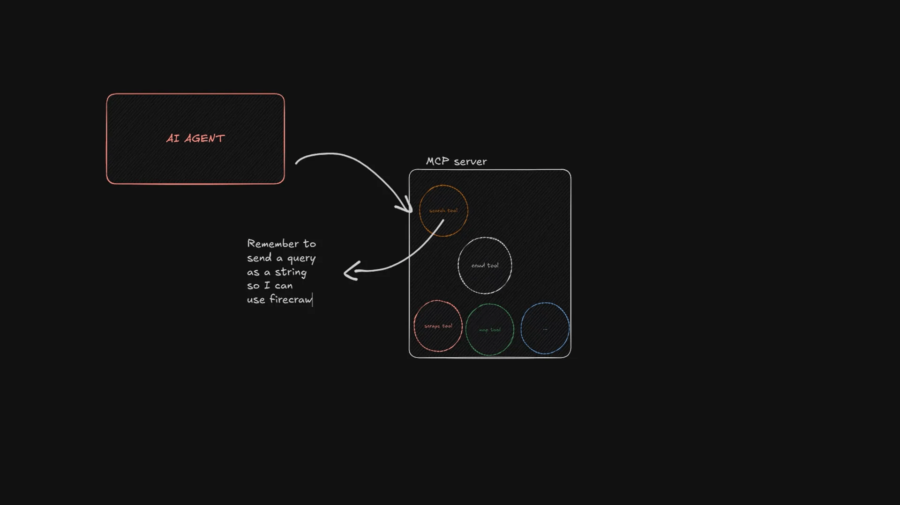
Como Funciona o MCP?
- Padronização: O MCP estabelece um formato padrão para a troca de informações.
- Integração: Permite que diferentes ferramentas sejam integradas em um único fluxo de trabalho.
- Atualizações Dinâmicas: As alterações nas ferramentas são automaticamente refletidas no sistema, garantindo que os agentes de IA tenham sempre acesso às informações mais recentes.
🌀 Uma Analogia para Entender MCPs
Para entender melhor o conceito de MCPs, vamos usar uma analogia simples. Imagine que você é o proprietário de um restaurante. Cada ingrediente que você precisa vem de um fornecedor diferente. O chef, que representa o seu agente de IA, precisa de instruções claras sobre o que pedir a cada fornecedor.
Se um dia você perceber que os hambúrgueres não têm queijo, isso pode ser um grande problema. O chef pode ter seguido as instruções corretamente, mas se o fornecedor mudou a forma de medir o queijo, você terá que atualizar todos os seus pedidos manualmente. É aqui que entra o MCP, que atua como uma empresa que gerencia essas instruções para você, garantindo que o chef sempre tenha tudo que precisa, na medida certa.
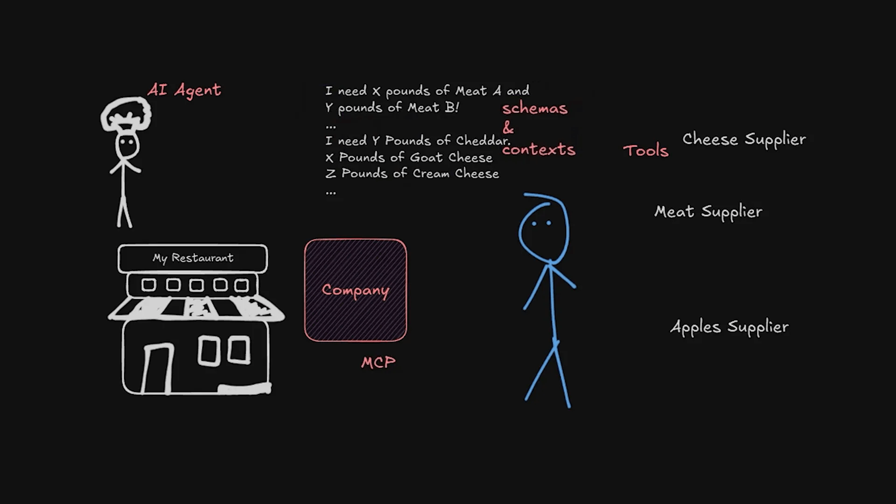
Por Que Essa Analogia é Importante?
Essa analogia destaca a importância da comunicação clara e da atualização dinâmica de informações. O MCP não apenas simplifica a forma como os agentes de IA interagem com ferramentas, mas também elimina a necessidade de constantes revisões e correções nos fluxos de trabalho.
Com o MCP, seu assistente virtual pode operar de maneira mais eficaz, utilizando as ferramentas disponíveis sem a necessidade de configurações complexas. Isso libera tempo e recursos para que você possa se concentrar em outras áreas do seu projeto.
💻 Exemplo Prático com Firecrawl
Vamos considerar um exemplo prático usando o Firecrawl, um scraper que possui múltiplas ferramentas integradas. Sem o MCP, cada ferramenta precisaria ser configurada individualmente dentro do agente de IA, o que poderia ser um processo demorado e propenso a erros.
Por outro lado, com a implementação do MCP, todas essas ferramentas podem ser acessadas de forma centralizada. Isso significa que, ao invés de reconfigurar cada uma sempre que uma mudança é feita, você simplesmente atualiza o MCP, que gerencia a comunicação entre as ferramentas e o agente de IA.
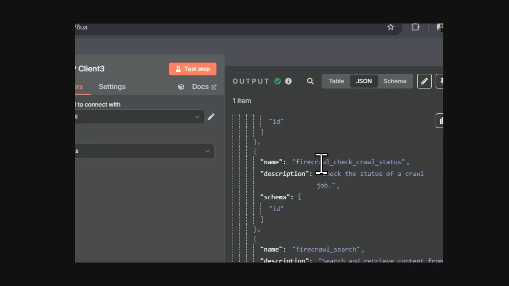
Como Configurar o Firecrawl com MCP
- Integre o Firecrawl ao seu fluxo de trabalho existente.
- Configure as ferramentas necessárias através do MCP.
- Teste a integração para garantir que todas as ferramentas estão funcionando corretamente.
Esse processo reduz significativamente o tempo de configuração e permite que você se concentre em tarefas mais críticas.
🚀 Benefícios dos MCPs para Agentes de IA
Os benefícios dos MCPs são amplos e impactam diretamente a eficiência dos agentes de IA. Aqui estão alguns dos principais benefícios:
- Eficiência: Reduz a necessidade de reconfigurações manuais, economizando tempo e esforço.
- Flexibilidade: Permite que novas ferramentas sejam integradas facilmente ao fluxo de trabalho existente.
- Atualizações em Tempo Real: Garante que os agentes de IA sempre utilizem as informações mais atualizadas.
- Melhor Experiência do Usuário: Proporciona uma interação mais fluida e intuitiva entre o agente de IA e as ferramentas.
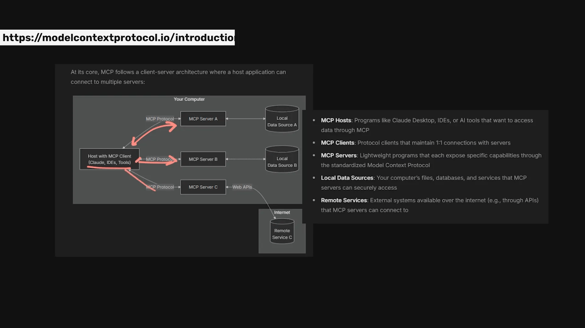
Impacto na Produtividade
Com a implementação do MCP, as equipes podem trabalhar de maneira mais produtiva. Ao eliminar a necessidade de ajustes constantes e permitir que as ferramentas se comuniquem de forma eficiente, os agentes de IA podem realizar tarefas mais complexas com facilidade.
🔧 Atualizando o n8n para Acesso aos Nós MCP
Se você está utilizando o n8n, é fundamental manter sua instalação atualizada para acessar os nós MCP. Se você estiver usando a versão auto-hospedada, pode ser necessário atualizar manualmente.
Para atualização, siga estas etapas: execute um comando específico e reinicie seu contêiner. Isso garantirá que você tenha acesso às últimas funcionalidades do MCP.
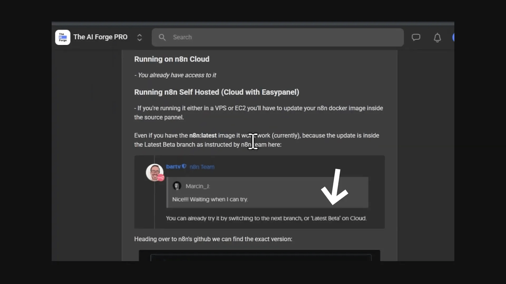
Passo a Passo para Atualização
- Verifique a versão atual do n8n que você está usando.
- Execute o comando de atualização apropriado.
- Reinicie o contêiner ou inicie um novo, se necessário.
Essas etapas garantirão que você tenha acesso às novas funcionalidades e melhorias trazidas pelo MCP.
⚙️ Configurando o MCP Server Trigger
Para começar a usar o MCP, a primeira etapa é configurar o MCP Server Trigger. Este componente permite expor uma URL que pode ser acessada por outras ferramentas, como o Google Calendar ou o Telegram. Vamos dar uma olhada em como fazer isso de maneira simples e eficaz.
Primeiro, você precisa acessar a interface do n8n e localizar o nó de MCP Server Trigger. Uma vez encontrado, arraste-o para o seu fluxo de trabalho. A partir daí, você poderá definir a autenticação e um caminho para facilitar o acesso à URL que será exposta.
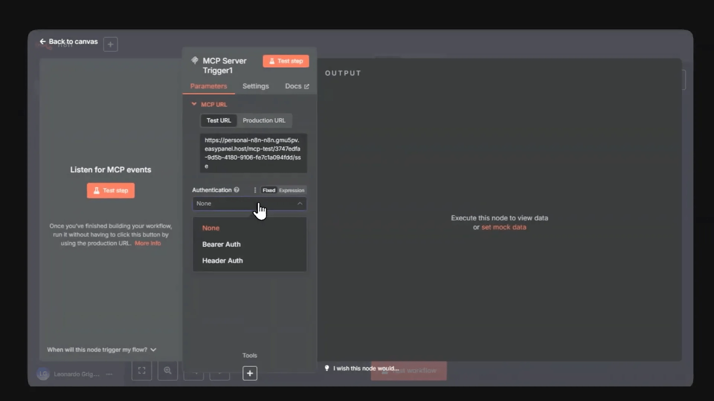
Passos para Configuração
- Arraste o nó MCP Server Trigger para o seu fluxo de trabalho.
- Defina a autenticação para proteger a URL.
- Escolha um caminho que seja fácil de lembrar.
Após configurar, você pode conectar outras ferramentas ao MCP Server Trigger, permitindo que elas acessem a URL exposta.
📅 Criando uma Ferramenta de Google Calendar
Uma das implementações mais úteis do MCP é a integração com o Google Calendar. Para isso, você precisa criar uma ferramenta que permita que seu assistente virtual agende compromissos e reuniões diretamente no calendário.
Após configurar o MCP Server Trigger, adicione um nó que represente a ferramenta do Google Calendar. É essencial que você defina o esquema de entrada corretamente, pois isso garantirá que o agente de IA compreenda as informações que precisa receber.
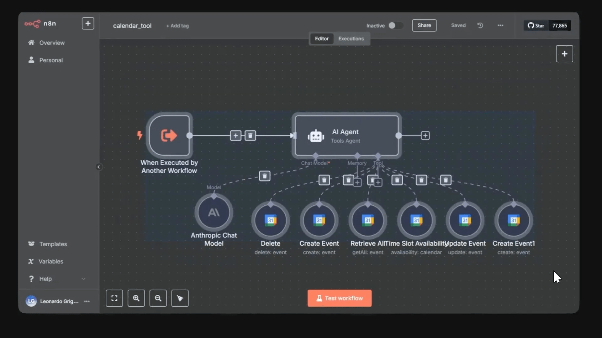
Configuração da Ferramenta
- Adicione o nó da ferramenta do Google Calendar ao fluxo.
- Conecte-o ao MCP Server Trigger.
- Defina o esquema de entrada, especificando quais campos o agente de IA deve preencher.
Com isso, você terá uma integração funcional que permitirá que o agente de IA interaja com o Google Calendar de forma eficaz.
📱 Adicionando a Ferramenta do Telegram
Para melhorar ainda mais a interação do seu assistente, vamos adicionar uma ferramenta do Telegram. Essa integração permitirá que o agente envie mensagens diretamente para o Telegram, tornando a comunicação mais dinâmica.
Turbine seu Desenvolvimento com Prompts!
Você já sonhou em criar seu próprio aplicativo mas pensou que precisaria ser um gênio da programação? Chegou a hora de transformar esse sonho em realidade! Com as ferramentas no-code de hoje, você pode criar aplicativos profissionais sem escrever uma única linha de código.
Assim como na ferramenta do Google Calendar, você precisará adicionar o nó correspondente ao Telegram no seu fluxo de trabalho e conectá-lo ao MCP Server Trigger.
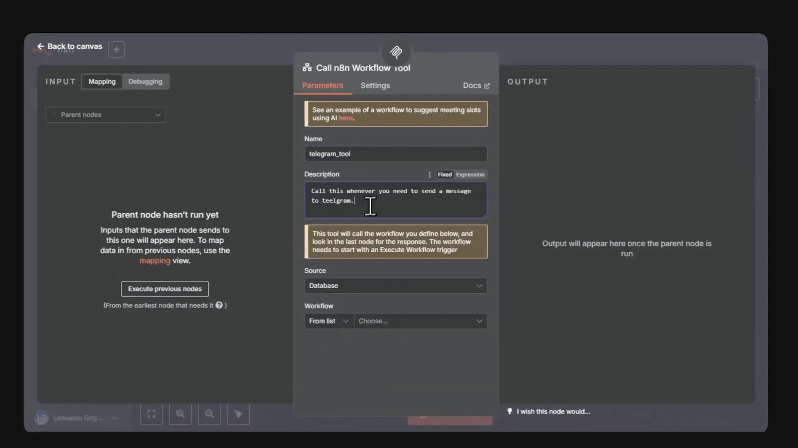
Passos para Adicionar o Telegram
- Arraste o nó do Telegram para o seu fluxo de trabalho.
- Conecte-o ao MCP Server Trigger.
- Defina o esquema de entrada para que o agente saiba como enviar mensagens.
Isso permitirá que seu assistente virtual se comunique via Telegram, aumentando a versatilidade do seu fluxo de trabalho.
🔍 Testando o MCP Server Trigger
Uma vez que todas as ferramentas estão configuradas, o próximo passo é testar o MCP Server Trigger. Isso garantirá que tudo esteja funcionando corretamente antes de colocar em produção.
Para fazer isso, você pode usar o nó MCP Client. Este nó permite que você faça chamadas ao MCP Server Trigger e verifique se as interações estão ocorrendo como esperado.
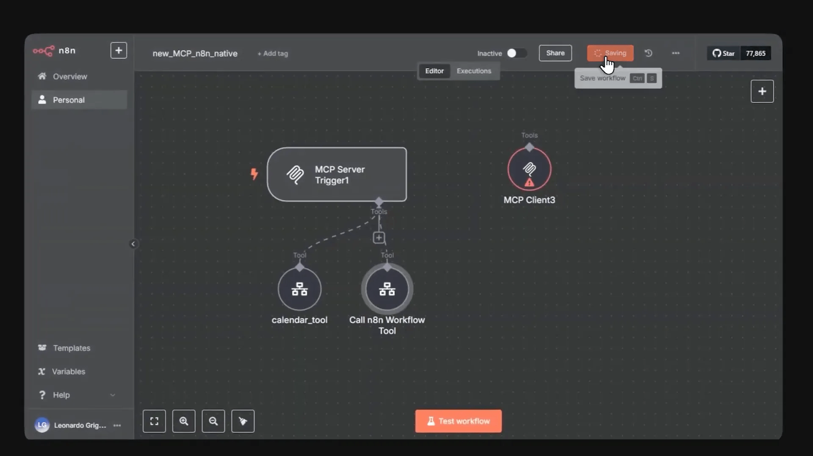
Passos para Testar
- Adicione o nó MCP Client ao seu fluxo de trabalho.
- Conecte-o ao MCP Server Trigger.
- Ative o fluxo de trabalho e inicie o teste.
Se tudo estiver configurado corretamente, você deverá ver as respostas do agente de IA interagindo com as ferramentas conectadas.
🤖 Interagindo com o Agente de IA
Com o MCP Server Trigger e as ferramentas configuradas, você pode começar a interagir com seu agente de IA. Isso permite que você faça perguntas e receba respostas em tempo real, utilizando as ferramentas integradas.
Para isso, você deve configurar um nó que represente o agente de IA e conectá-lo ao MCP Client. Isso garantirá que todas as interações sejam registradas e processadas adequadamente.
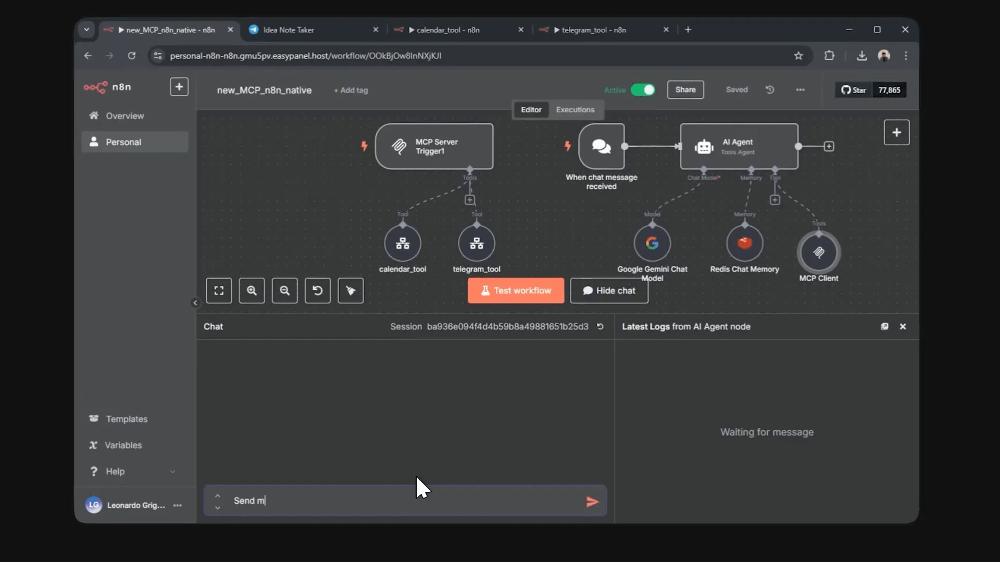
Passos para Interação
- Adicione o nó do agente de IA ao fluxo de trabalho.
- Conecte-o ao nó MCP Client.
- Configure as opções de interação conforme necessário.
Agora, você pode conversar com o agente de IA e testar as funcionalidades das ferramentas integradas.
🔒 Questões de Segurança com Nós Customizados
Embora o MCP ofereça uma maneira eficiente de integrar várias ferramentas, é importante considerar questões de segurança, especialmente quando se trata de nós customizados. Para isso, o MCP Server Trigger permite que você configure autenticação e proteja suas URLs.
Se você estiver utilizando nós externos ou customizados, é fundamental garantir que eles estejam devidamente configurados para evitar vulnerabilidades. O MCP pode ajudar, mas a segurança deve ser sempre uma prioridade.
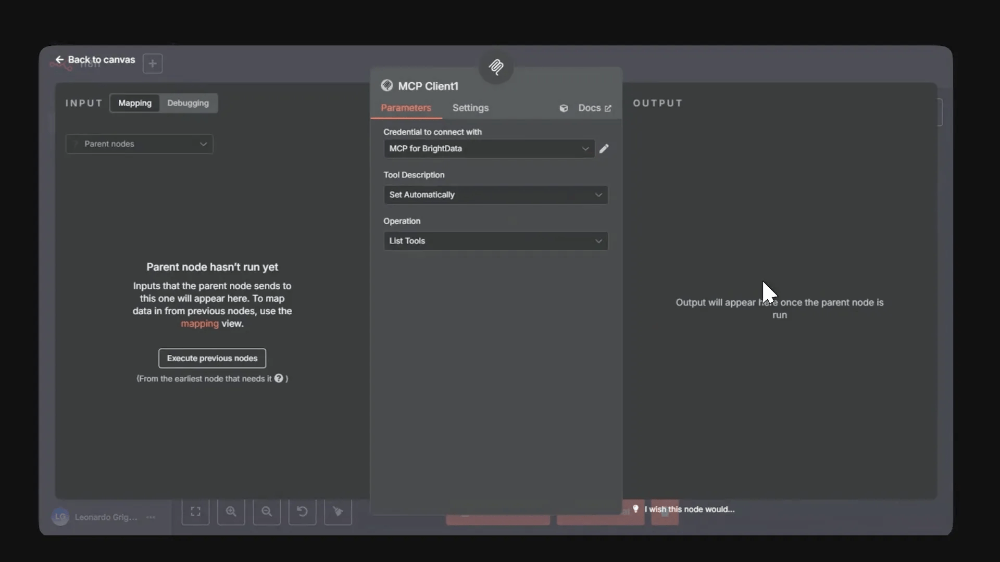
Melhores Práticas de Segurança
- Autenticação: Sempre utilize autenticação para proteger suas URLs.
- Monitoramento: Monitore as interações com suas ferramentas para identificar comportamentos suspeitos.
- Atualizações: Mantenha suas ferramentas e o MCP sempre atualizados para evitar falhas de segurança.
Seguindo essas práticas, você pode garantir que sua integração de inteligência artificial desenvolvimento frontend design ai seja não apenas eficiente, mas também segura.
🛠️ Vantagens de Usar o MCP
O uso do Protocolo de Contexto do Modelo (MCP) traz uma série de vantagens que podem transformar significativamente a maneira como trabalhamos com ferramentas de inteligência artificial. Vamos explorar algumas delas.
- Integração Simplificada: O MCP permite que várias ferramentas sejam conectadas de forma ágil e eficiente, eliminando a necessidade de ajustes manuais constantes.
- Atualizações em Tempo Real: Qualquer mudança nas ferramentas é automaticamente refletida no fluxo de trabalho, garantindo que seu assistente virtual sempre tenha acesso às informações mais recentes.
- Melhoria na Experiência do Usuário: A comunicação eficaz entre o agente de IA e as ferramentas resulta em interações mais fluídas e intuitivas.
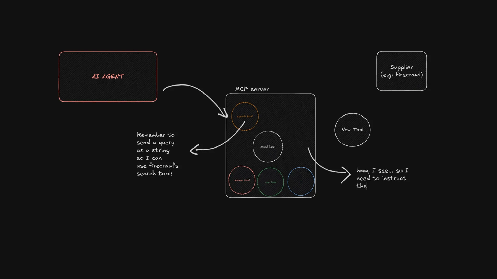
Impacto na Produtividade
Com o MCP, equipes podem se concentrar em tarefas mais estratégicas, ao invés de perder tempo configurando e ajustando ferramentas. Isso não apenas aumenta a produtividade, mas também melhora a qualidade do trabalho realizado.
🔧 Ativando o Modo Desenvolvedor no Cloud Desktop
Para aproveitar ao máximo o MCP, é essencial ativar o modo desenvolvedor no Cloud Desktop. Isso permitirá que você faça as configurações necessárias para integrar suas ferramentas de forma eficaz.
Veja como ativar o modo desenvolvedor:
- Acesse a seção de ajuda no Cloud Desktop.
- Vá até Arquivo > Configurações > Desenvolvedor.
- Clique no botão Editar Configuração.
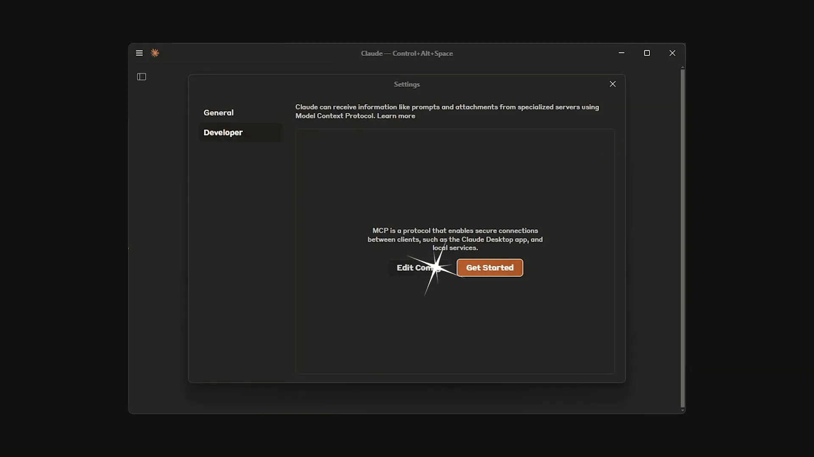
Configuração do Arquivo JSON
Após ativar o modo desenvolvedor, um diretório com o arquivo cloud_desktop_config.json será aberto. Aqui, você deve inserir o código que permite a integração com o MCP.
- Adicione a URL de produção do seu servidor MCP no arquivo JSON.
- Salve as alterações.
- Retorne ao Cloud Desktop para verificar se as ferramentas foram identificadas corretamente.
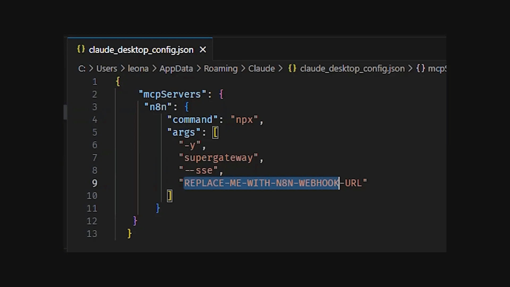
🔗 Concluindo a Integração com Claude Desktop
Uma vez que o modo desenvolvedor está ativado e o arquivo de configuração está ajustado, você pode prosseguir para concluir a integração com Claude Desktop. Isso permitirá que seu assistente virtual utilize as ferramentas disponíveis de maneira eficiente.
Para isso, siga estas etapas:
- Verifique se todas as ferramentas foram corretamente identificadas ao lado da área de texto.
- Comece a interagir com Claude, solicitando as tarefas desejadas.
- Certifique-se de permitir que Claude utilize as ferramentas integradas.
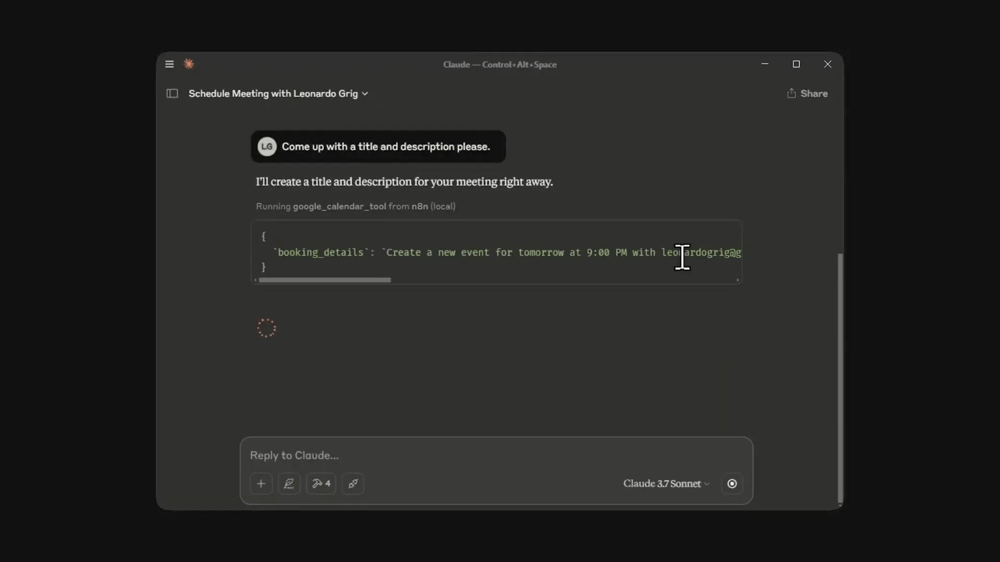
❓ FAQ sobre MCP e Desenvolvimento Frontend
Para esclarecer algumas dúvidas comuns sobre o uso do MCP e seu impacto no desenvolvimento frontend, reunimos as perguntas mais frequentes.
O que é o MCP?
O MCP, ou Protocolo de Contexto do Modelo, é um padrão aberto que facilita a comunicação entre diferentes ferramentas e agentes de IA, permitindo integrações mais eficientes.
Como o MCP beneficia o desenvolvimento frontend?
Ao utilizar o MCP, desenvolvedores podem integrar diversas ferramentas em um único fluxo de trabalho, melhorando a produtividade e a experiência do usuário.
É necessário ter conhecimentos técnicos para implementar o MCP?
Embora algum conhecimento técnico seja útil, a configuração do MCP foi projetada para ser acessível, permitindo que desenvolvedores de diferentes níveis possam implementá-lo facilmente.
Quais ferramentas podem ser integradas usando o MCP?
Praticamente qualquer ferramenta que suporte o MCP pode ser integrada, desde scrapers até serviços de calendário e comunicação, como o Google Calendar e Telegram.
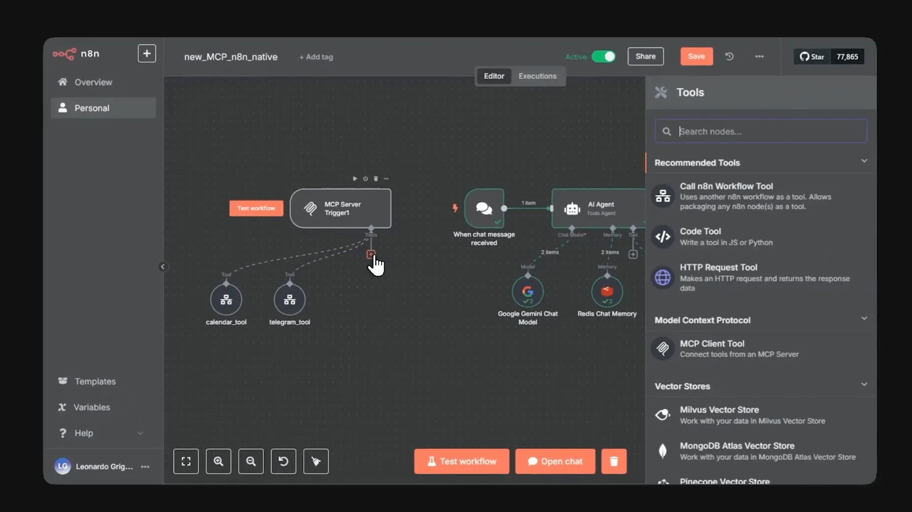
O MCP é seguro para uso em aplicações críticas?
Sim, o MCP permite a configuração de autenticação e outras medidas de segurança, garantindo que suas integrações sejam seguras e confiáveis.